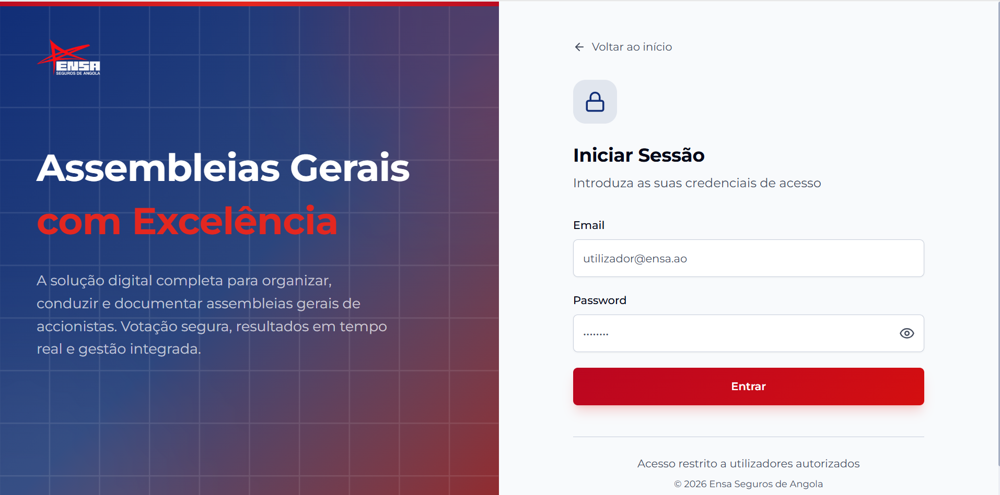
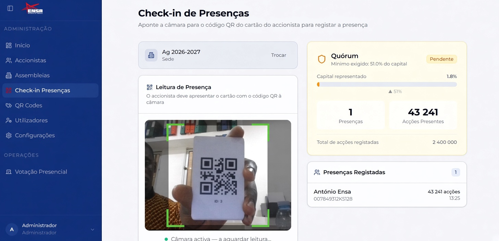
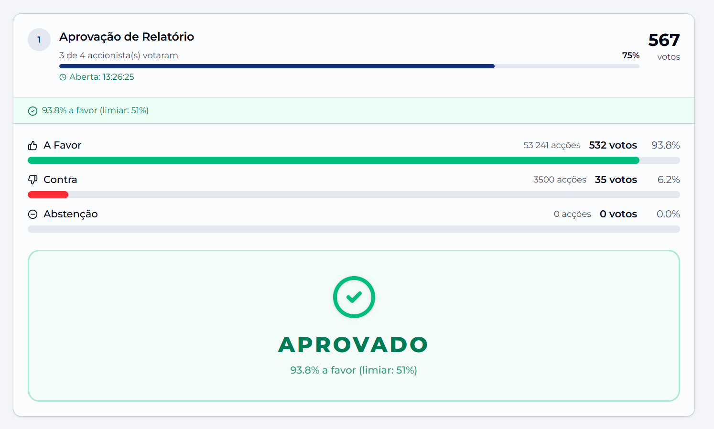

STATUS: EM PRODUÇÃO
ENSA Seguros de Angola
Gestão de Assembleias Gerais
Plataforma completa para organizar, conduzir e documentar assembleias de accionistas: autenticação, check-in por QR, quórum em tempo real, votação presencial e resultados ponderados por acções.